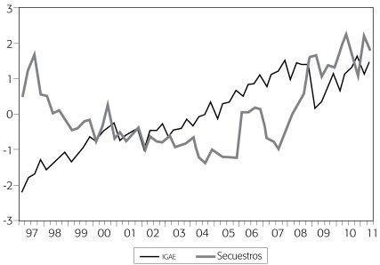

Incremento de la delincuencia 2018 - 2024
20 por ciento de los criminales realizan el 80 por ciento de los delitos; mientras que el 80 por ciento de los delitos se concentran en el 20 por ciento de los territorios, y que las zonas marcadas por el abandono son las que concentran la mayor cantidad de hechos delictivos.
Ver publicacion →